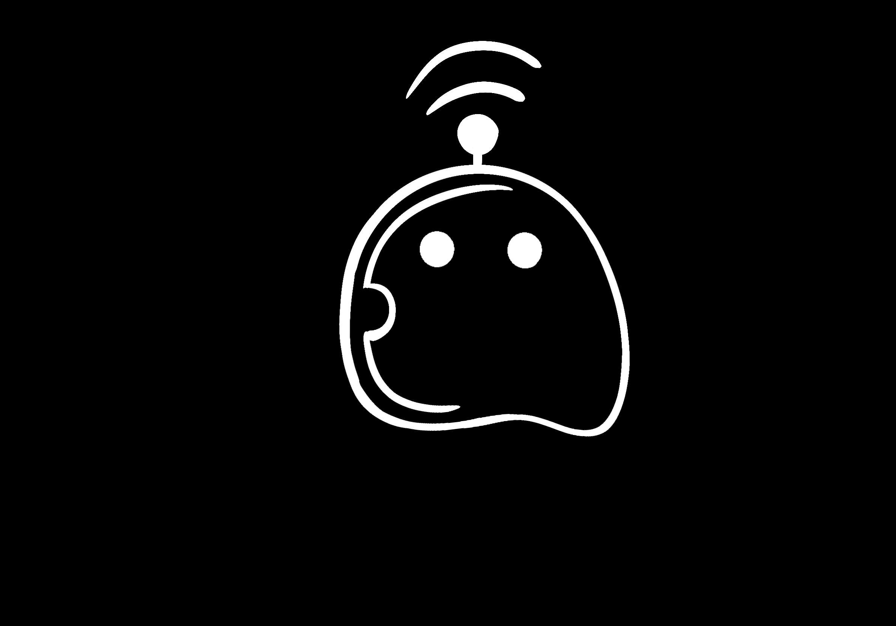
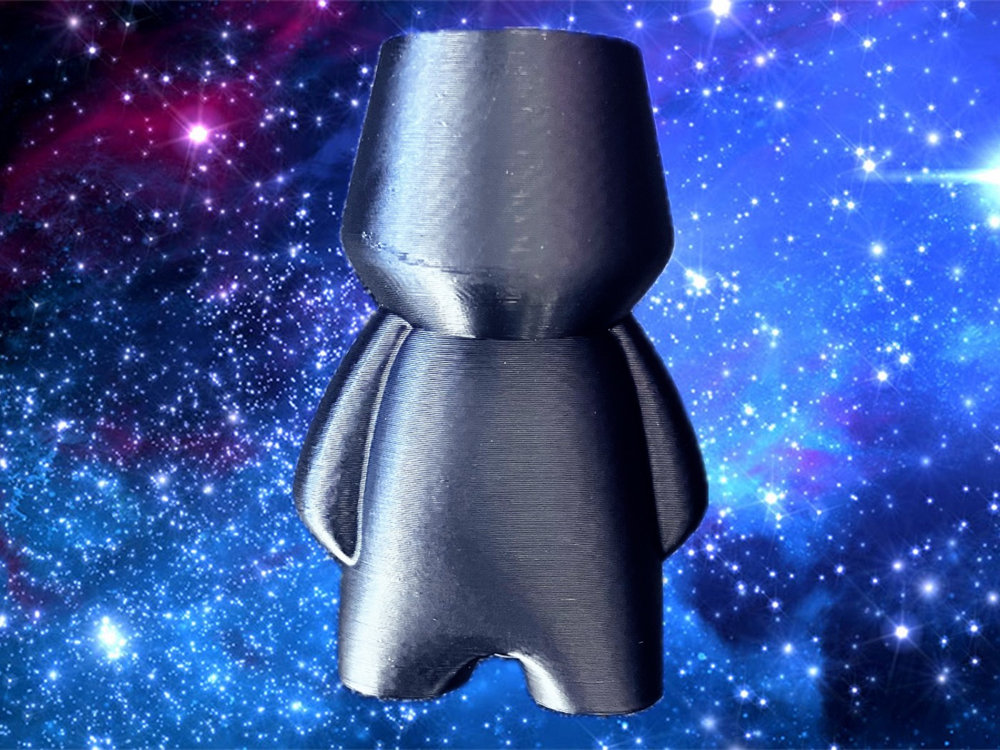

Between Worlds Communications Office
Communication between Life and Beyond
We are an expedition built on the values of exploration, kindness and community. We are here to establish contact with the Pondi.
We strive to create unity, foster trade, and encourage diplomatic exchange. We will soon host numerous events in our meeting space, the Between Worlds Communications Office!


You can help our cause as well! As we have only recently arrived on Planet Ponderosa, we are still adjusting to environmental hazards and struggling to find a means to sustain ourselves. Please, maintain a safe distance to protect both humans and Pondi from life-threatening disease until we can devise a way to prevent this. Also, we did not bring weapons to Ponderosa, and we will always act peacefully...please treat us similarly! Check back soon for webinars, surveys, and other ways to connect!